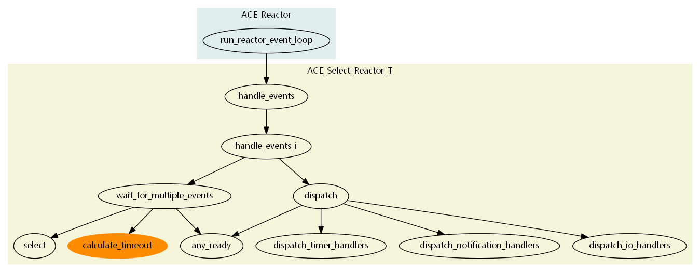

本章目录
2. ACE_Select_Reactor_T 介绍¶
该类继承自类ACE_Select_Reactor_Impl，实现了对IO时间、信号量、定时器的分发处理，公共的函数需要ACE_Reactor_Token进行锁定。typedef ACE_Select_Reactor_T<ACE_Select_Reactor_Token> ACE_Select_Reactor定义了常用的ACE_Select_Reactor类，可以在程序中直接使用。
{kind=link}
{kind=link}
2.3. 类主要成员变量¶
ACE_Select_Reactor_Impl继承自 ACE_Reactor_Impl，在类ACE_Select_Reactor_Impl中定义了常用的成员变量：
ace/Select_Reactor_Base.h
1 2 3 4 5 6 7 8 9 10 11 12 13 14 15 16 17 18 19 20 21 22 23 24 25 26 27 28 29 30 31 32 33 34 35 36 37 38 39 40 41 42 43 44 45 46 47 48 49 50 51 52 53 54 55 | /// 提供<ACE_HANDLE>到<ACE_Event_Handler *>的映射
ACE_Select_Reactor_Handler_Repository handler_rep_;
/// 跟踪使用select函数返回的已触发的handle
ACE_Select_Reactor_Handle_Set dispatch_set_;
/// 跟踪要被select函数跟踪的句柄
ACE_Select_Reactor_Handle_Set wait_set_;
/// 跟踪当前被挂起的句柄
ACE_Select_Reactor_Handle_Set suspend_set_;
/// 跟踪我们感兴趣但不使用select函数触发的其他类型的各种句柄，例如 handle_*() 函数的返回值大于 0
ACE_Select_Reactor_Handle_Set ready_set_;
/// 定义时间轮队列指针，默认为：ACE_Timer_Heap
ACE_Timer_Queue *timer_queue_;
/// 处理信号量而不是用全局/静态的变量
ACE_Sig_Handler *signal_handler_;
/// 回调对象用于唤醒睡眠中的ACE_Select_Reactor，默认为ACE_Select_Reactor_Notify
ACE_Reactor_Notify *notify_handler_;
/// 跟踪是否需要我们自己负责删除时间队列标志
bool delete_timer_queue_;
/// 跟踪是否需要我们自己删除信号句柄
bool delete_signal_handler_;
/// 跟踪是否需要我们自己删除通知句柄
bool delete_notify_handler_;
/// 是否进行初始化的标记
bool initialized_;
/// 是否自动重启<handle_events>的事件循环，如果select被信号量中断
bool restart_;
/// 表明ACE_Select_Reactor主线程在<notify>回调等待列表中的位置。如果等于-1表明在list的尾部，
/// 0表明在队列首部，如果大于1表明队列等待队列需要处理的数目
int requeue_position_;
/// 创建该类的的原始线程
ACE_thread_t owner_;
/// 如果为true表明state已经在ACE_Event_Handler派发过程中发生了变化。这用于确定我们是否
/// 需要在<Select_Reactor>的<wait_for_multiple_events>循环中做做另外一次迭代
/// ACE_Select_Reactor_Impl::clear_dispatch_mask (ACE_HANDLE handle,ACE_Reactor_Mask mask)中修改了
/// dispatch_set_中的handle的mask，则会将该状态设置成true。
bool state_changed_;
/// 如果为false，则reactor在事件分发过程中将不屏蔽信号量。这对于不注册任何信号量句柄的程序非常有用，
/// 如果修改这个mask的值，可以减少内核层次锁的开销
bool mask_signals_;
|
Note
其中ACE_Select_Reactor_Handler_Repository handler_rep_的数据结构定义，可参见 bind 函数 。
2.4. 事件处理函数调用图¶
{kind=link}
Note
calculate_timeout 函数的调用为类实现中 timer_queue_ 时间队列中最早到期时间，以便设置后续 select 调用函数的超时时间，从而实现了时间队列与IO句柄触发的整合。
2.5. 事件处理主流程¶
ace/Reactor.cpp
1 2 3 4 5 6 7 8 9 10 11 12 13 14 15 16 17 18 19 20 21 22 23 24 25 26 27 28 29 30 31 32 33 34 35 36 37 38 39 40 41 | int
ACE_Reactor::run_reactor_event_loop (ACE_Time_Value &tv,
REACTOR_EVENT_HOOK eh)
{
ACE_TRACE ("ACE_Reactor::run_reactor_event_loop");
if (this->reactor_event_loop_done ())
return 0;
while (1)
{
int result = this->implementation_->handle_events (tv);
if (eh != 0 && (*eh) (this))
continue;
else if (result == -1)
{
if (this->implementation_->deactivated ())
result = 0;
return result;
}
else if (result == 0)
{
// The <handle_events> method timed out without dispatching
// anything. Because of rounding and conversion errors and
// such, it could be that the wait loop (WFMO, select, etc.)
// timed out, but the timer queue said it wasn't quite ready
// to expire a timer. In this case, the ACE_Time_Value we
// passed into handle_events won't have quite been reduced
// to 0, and we need to go around again. If we are all the
// way to 0, just return, as the entire time the caller
// wanted to wait has been used up.
if (tv.usec () > 0)
continue;
return 0;
}
// Else there were some events dispatched; go around again
}
ACE_NOTREACHED (return 0;)
}
|
行12行，Reactor调用了其实现者的 handle_events(ACE_Time_Value *max_wait_time) 函数，实现类的handle_event函数承担了主要工作的分发和处理。
2.5.1. handle_events 函数流程¶
ace/Select_Reactor_T.cpp handle_events 函数
1 2 3 4 5 6 7 8 9 10 11 12 13 14 15 16 17 18 19 20 21 22 23 24 25 26 27 28 29 30 31 32 33 34 35 36 37 38 | template <class ACE_SELECT_REACTOR_TOKEN> int
ACE_Select_Reactor_T<ACE_SELECT_REACTOR_TOKEN>::handle_events
(ACE_Time_Value *max_wait_time)
{
ACE_TRACE ("ACE_Select_Reactor_T::handle_events");
// Stash the current time -- the destructor of this object will
// automatically compute how much time elapsed since this method was
// called.
ACE_Countdown_Time countdown (max_wait_time);
#if defined (ACE_MT_SAFE) && (ACE_MT_SAFE != 0)
ACE_GUARD_RETURN (ACE_SELECT_REACTOR_TOKEN, ace_mon, this->token_, -1);
if (ACE_OS::thr_equal (ACE_Thread::self (), this->owner_) == 0)
{
errno = EACCES;
return -1;
}
if (this->deactivated_)
{
errno = ESHUTDOWN;
return -1;
}
// Update the countdown to reflect time waiting for the mutex.
countdown.update ();
#else
if (this->deactivated_)
{
errno = ESHUTDOWN;
return -1;
}
#endif /* ACE_MT_SAFE */
return this->handle_events_i (max_wait_time);
}
|
2.5.2. handle_events_i 函数流程¶
ace/Select_Reactor_T.cpp handle_events_i 函数
1 2 3 4 5 6 7 8 9 10 11 12 13 14 15 16 17 18 19 20 21 22 23 24 25 26 27 28 29 30 31 32 33 | template <class ACE_SELECT_REACTOR_TOKEN> int
ACE_Select_Reactor_T<ACE_SELECT_REACTOR_TOKEN>::handle_events_i
(ACE_Time_Value *max_wait_time)
{
int result = -1;
ACE_SEH_TRY
{
// We use the data member dispatch_set_ as the current dispatch
// set.
// We need to start from a clean dispatch_set
this->dispatch_set_.rd_mask_.reset ();
this->dispatch_set_.wr_mask_.reset ();
this->dispatch_set_.ex_mask_.reset ();
int number_of_active_handles =
this->wait_for_multiple_events (this->dispatch_set_,
max_wait_time);
result =
this->dispatch (number_of_active_handles,
this->dispatch_set_);
}
ACE_SEH_EXCEPT (this->release_token ())
{
// As it stands now, we catch and then rethrow all Win32
// structured exceptions so that we can make sure to release the
// <token_> lock correctly.
}
return result;
}
|
行18, this->wait_for_multiple_events (this->dispatch_set_,max_wait_time) 实现了对于可分发句柄集的获取。
行21，this->dispatch (number_of_active_handles,this->dispatch_set_) 实现了对于分发句柄集的处理。
2.5.2.1. wait_for_multiple_events 函数¶
ace/Select_Reactor_T.cpp wait_for_multiple_events 函数
1 2 3 4 5 6 7 8 9 10 11 12 13 14 15 16 17 18 19 20 21 22 23 24 25 26 27 28 29 30 31 32 33 34 35 36 37 38 39 40 41 42 43 44 45 46 47 48 49 50 51 52 53 54 55 56 57 58 59 60 61 62 63 64 65 66 67 68 69 70 71 72 73 74 75 76 | // Must be called with lock held.
template <class ACE_SELECT_REACTOR_TOKEN> int
ACE_Select_Reactor_T<ACE_SELECT_REACTOR_TOKEN>::wait_for_multiple_events
(ACE_Select_Reactor_Handle_Set &dispatch_set,
ACE_Time_Value *max_wait_time)
{
ACE_TRACE ("ACE_Select_Reactor_T::wait_for_multiple_events");
ACE_Time_Value timer_buf (0);
ACE_Time_Value *this_timeout = 0;
int number_of_active_handles = this->any_ready (dispatch_set);
// If there are any bits enabled in the <ready_set_> then we'll
// handle those first, otherwise we'll block in <select>.
if (number_of_active_handles == 0)
{
do
{
if (this->timer_queue_ == 0)
return 0;
this_timeout =
this->timer_queue_->calculate_timeout (max_wait_time,
&timer_buf);
#ifdef ACE_WIN32
// This arg is ignored on Windows and causes pointer
// truncation warnings on 64-bit compiles.
int const width = 0;
#else
int const width = this->handler_rep_.max_handlep1 ();
#endif /* ACE_WIN32 */
dispatch_set.rd_mask_ = this->wait_set_.rd_mask_;
dispatch_set.wr_mask_ = this->wait_set_.wr_mask_;
dispatch_set.ex_mask_ = this->wait_set_.ex_mask_;
number_of_active_handles = ACE_OS::select (width,
dispatch_set.rd_mask_,
dispatch_set.wr_mask_,
dispatch_set.ex_mask_,
this_timeout);
}
while (number_of_active_handles == -1 && this->handle_error () > 0);
if (number_of_active_handles > 0)
{
#if !defined (ACE_WIN32)
// Resynchronize the fd_sets so their "max" is set properly.
dispatch_set.rd_mask_.sync (this->handler_rep_.max_handlep1 ());
dispatch_set.wr_mask_.sync (this->handler_rep_.max_handlep1 ());
dispatch_set.ex_mask_.sync (this->handler_rep_.max_handlep1 ());
#endif /* ACE_WIN32 */
}
else if (number_of_active_handles == -1)
{
// Normally, select() will reset the bits in dispatch_set
// so that only those filed descriptors that are ready will
// have bits set. However, when an error occurs, the bit
// set remains as it was when the select call was first made.
// Thus, we now have a dispatch_set that has every file
// descriptor that was originally waited for, which is not
// correct. We must clear all the bit sets because we
// have no idea if any of the file descriptors is ready.
//
// NOTE: We dont have a test case to reproduce this
// problem. But pleae dont ignore this and remove it off.
dispatch_set.rd_mask_.reset ();
dispatch_set.wr_mask_.reset ();
dispatch_set.ex_mask_.reset ();
}
}
// Return the number of events to dispatch.
return number_of_active_handles;
}
|
行12,，this->any_ready(dispatch_set) 实现了获取不需要select函数触发的其他类型满足触发条件的句柄
行25-26，this->timer_queue_->calculate_timeout(max_wait_time,&timer_buf) 实现了对定时器队列的超时的计算
行38-42，ACE_OS::select(width,dispatch_set.rd_mask_,dispatch_set.wr_mask_,dispatch_set.ex_mask_,this_timeout) 实现了对使用select函数返回的已触发的handle的跟踪
2.5.2.2. dispatch 函数¶
ace/Select_Reactor_T.cpp dispatch 函数
1 2 3 4 5 6 7 8 9 10 11 12 13 14 15 16 17 18 19 20 21 22 23 24 25 26 27 28 29 30 31 32 33 34 35 36 37 38 39 40 41 42 43 44 45 46 47 48 49 50 51 52 53 54 55 56 57 58 59 60 61 62 63 64 65 66 67 68 69 70 71 72 73 74 75 76 77 78 79 80 81 82 83 84 85 86 87 88 89 90 91 92 93 94 95 96 97 98 99 100 101 102 103 104 105 106 107 108 | template <class ACE_SELECT_REACTOR_TOKEN> int
ACE_Select_Reactor_T<ACE_SELECT_REACTOR_TOKEN>::dispatch
(int active_handle_count,
ACE_Select_Reactor_Handle_Set &dispatch_set)
{
ACE_TRACE ("ACE_Select_Reactor_T::dispatch");
int io_handlers_dispatched = 0;
int other_handlers_dispatched = 0;
int signal_occurred = 0;
// The following do/while loop keeps dispatching as long as there
// are still active handles. Note that the only way we should ever
// iterate more than once through this loop is if signals occur
// while we're dispatching other handlers.
do
{
// We expect that the loop will decrease the number of active
// handles in each iteration. If it does not, then something is
// inconsistent in the state of the Reactor and we should avoid
// the loop. Please read the comments on bug 2540 for more
// details.
int initial_handle_count = active_handle_count;
// Note that we keep track of changes to our state. If any of
// the dispatch_*() methods below return -1 it means that the
// <wait_set_> state has changed as the result of an
// <ACE_Event_Handler> being dispatched. This means that we
// need to bail out and rerun the select() loop since our
// existing notion of handles in <dispatch_set> may no longer be
// correct.
//
// In the beginning, our state starts out unchanged. After
// every iteration (i.e., due to signals), our state starts out
// unchanged again.
this->state_changed_ = false;
// Perform the Template Method for dispatching all the handlers.
// First check for interrupts.
if (active_handle_count == -1)
{
// Bail out -- we got here since <select> was interrupted.
if (ACE_Sig_Handler::sig_pending () != 0)
{
ACE_Sig_Handler::sig_pending (0);
// If any HANDLES in the <ready_set_> are activated as a
// result of signals they should be dispatched since
// they may be time critical...
active_handle_count = this->any_ready (dispatch_set);
// Record the fact that the Reactor has dispatched a
// handle_signal() method. We need this to return the
// appropriate count below.
signal_occurred = 1;
}
else
return -1;
}
// Handle timers early since they may have higher latency
// constraints than I/O handlers. Ideally, the order of
// dispatching should be a strategy...
else if (this->dispatch_timer_handlers (other_handlers_dispatched) == -1)
// State has changed or timer queue has failed, exit loop.
break;
// Check to see if there are no more I/O handles left to
// dispatch AFTER we've handled the timers...
else if (active_handle_count == 0)
return io_handlers_dispatched
+ other_handlers_dispatched
+ signal_occurred;
// Next dispatch the notification handlers (if there are any to
// dispatch). These are required to handle multi-threads that
// are trying to update the <Reactor>.
else if (this->dispatch_notification_handlers
(dispatch_set,
active_handle_count,
other_handlers_dispatched) == -1)
// State has changed or a serious failure has occured, so exit
// loop.
break;
// Finally, dispatch the I/O handlers.
else if (this->dispatch_io_handlers
(dispatch_set,
active_handle_count,
io_handlers_dispatched) == -1)
// State has changed, so exit loop.
break;
// if state changed, we need to re-eval active_handle_count,
// so we will not end with an endless loop
if (initial_handle_count == active_handle_count
|| this->state_changed_)
{
active_handle_count = this->any_ready (dispatch_set);
}
}
while (active_handle_count > 0);
return io_handlers_dispatched + other_handlers_dispatched + signal_occurred;
}
|
处理顺序：
- dispatch_timer_handlers 处理分发定时器，定时器的处理优于Socket/IO的处理。 展开流程见： 定时器与Select_Reactor的分发集成。
- dispatch_notification_handlers 处理分发通知类消息。展开流程见： 通知与Select_Reactor 的分发集成。
- dispatch_io_handlers 处理分发 io handlers。展开流程见： IO句柄与Select_Reactor的分发集成。